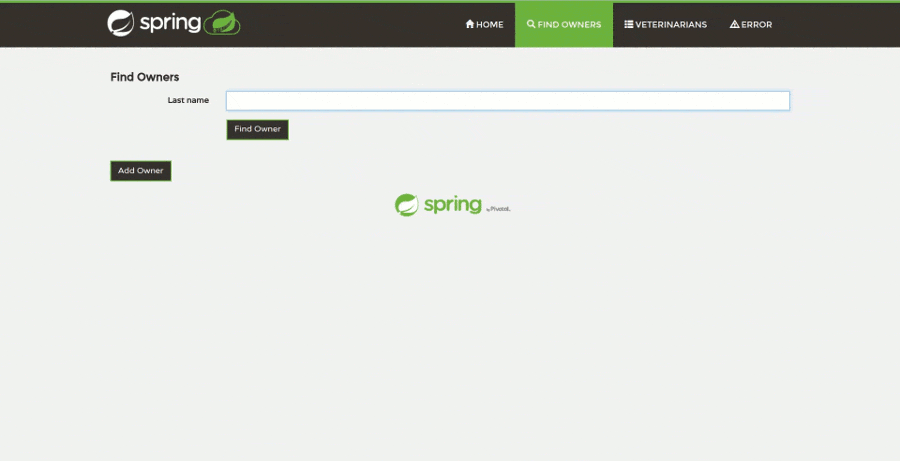

hoopoe is an open-source, forever free, no-ads java profiler. It’s main goal is to help java professionals to investigate and easily identify the bottlenecks in performance of their applications. The main focus is on user-friendly presentation of profiled results, providing developers with pleasurable profiling experience.
We want to make hoopoe-profiler as convenient as possible. Thus we value all the feedback and improvements proposals, as well as constructive critics and bug reports. Community is the force to shape the hoopoe.
If you want to contribute, please check our guide.
